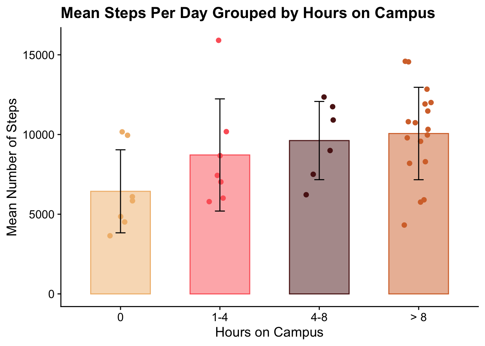
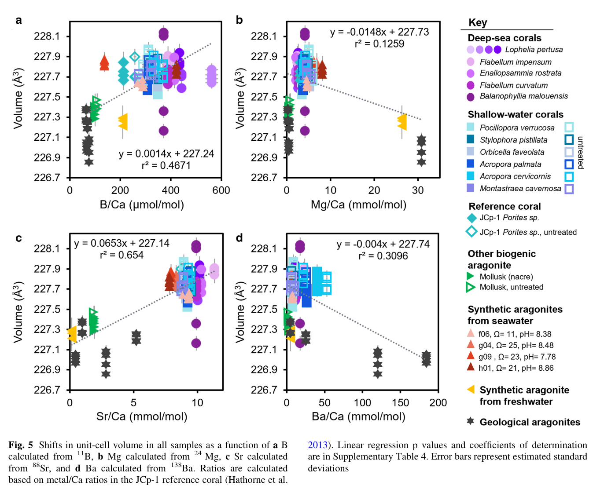

library("tidyverse")
library("here")
library("flextable")
library("janitor")
library("cowplot")
library("wesanderson")hw3
https://github.com/angelalarson/ENVS-193DS_homework-03
Problem 1. Personal Data
a. Data Summarizing
I can group hours on campus to low (1-4), medium (4-8), and high (>8) categories, and find the mean steps per day for each category as I believe my steps are higher when I am on campus for longer. This will require me grouping the hours on campus by time and then findings the means for each of those groups.
b. Visualization
personal <- read_csv(
here("data", "personal_data_sheet.csv")) # use the here function to read in the csv under a different column
personal_clean <- personal %>% # using personal df
clean_names() %>% # clean the names
select(steps, category_9, campus_time) # select specific columns
personal_summary <- personal_clean %>% # using personal_clean df
group_by(category_9) %>% # group by category
summarise(
mean_steps = round(mean(steps, na.rm = TRUE), 0), # average the steps per day and round
sd_steps = round(sd(steps, na.rm = TRUE), 0) # find the stdev of steps per day and round
) %>%
mutate(category_9 = factor(category_9, levels = c("none", "low", "med", "high"))) # reorder the categories
GB1 <- wesanderson::wes_palette("GrandBudapest1", n = 4, type = "discrete") # create an object using the wes anderson palette
names(GB1) <- c("none", "low", "med", "high") # assign specific colors from wes anderson palette
ggplot() +
geom_jitter(data = personal_clean, # jitter plot using personal_clean to include individual points
aes(x = category_9, # x is groups of hours on campus per day
y = steps, # number of steps per day
color = category_9), # group color by category of hours per day
width = 0.15, size = 2) + # changing width and size of points
geom_col(data = personal_summary, # plotting mean bars with personal summary df for mean and stdev values
aes(x = category_9, # x axis is groups of hours on campus per day
y = mean_steps, # y is avg steps per day
fill = category_9, # fill is by category
color = category_9), # color is by category
width = 0.6, alpha = 0.5) + # changing width and opacity of columns
geom_errorbar(data = personal_summary, # adding error bars from personal_summary
aes(x = category_9, # separated by category
ymin = mean_steps - sd_steps, # min bars
ymax = mean_steps + sd_steps), # max bars
width = 0.1) + # width of stdev end bars
labs(
title = "Mean Steps Per Day Grouped by Hours on Campus", # change title
x = "Hours on Campus", # change x axis
y = "Mean Number of Steps", # change y axis
) +
scale_x_discrete(labels = c( # change vague labels to more specific, showing hours that characterize them
"high" = "> 8",
"low" = "1-4",
"med" = "4-8",
"none" = "0"
)) +
scale_fill_manual(values = GB1) + # use GB1 for fill color palette
scale_color_manual(values = GB1) + # use GB1 for color palette
theme_cowplot() + # get rid of lines and gray background
theme(
legend.position = "none" # get rid of legend position
)
c. Caption
Figure 1. Mean steps grouped by hours on campus per day into none (0 hours), low (1-4 hours), medium (4-8 hours), and high (>8 hours). Colors represent each group represented. Each bar displays the mean steps per day for each group, with black standard deviation bars. Each point represents an individual steps per day value.
d. Table
personal_table <- personal_summary %>% # create a separate df for the table
mutate(
category_9 = recode(category_9, # rename vague labels to hour specific labels
"none" = "0",
"low" = "1–4",
"med" = "4–8",
"high" = "> 8")
) %>%
rename(
`Hours on Campus` = category_9, # rename column names from basic names in df
`Mean Steps` = mean_steps,
`SD` = sd_steps
)
flextable(personal_table) %>% # create table using flextable and personal_table df
theme_vanilla() %>% # use vanilla theme
autofit() %>% # fit column labels to fit column width
set_caption("Table 1: Mean Steps Per Day Grouped by Hours on Campus") # add a titleHours on Campus | Mean Steps | SD |
|---|---|---|
> 8 | 10,062 | 2,899 |
1–4 | 8,716 | 3,519 |
4–8 | 9,620 | 2,454 |
0 | 6,436 | 2,604 |
Problem 2. Affective Visualization
a. Description of affective visualization
I want to visualize the bar graph I made above, and also compare steps to type of exercise. I want to incorporate campus visuals and make it based on height to sort of make a skyline image but with campus buildings. I think I could make a pie chart for the exercise, or some other sort of visual to show the ratios of steps to each other for specific exercises. I want to make it personalized to me as well, perhaps buildings that are iconic to UCSB or buildings I spent a lot of time in since they make up the majority of where I spent my time on campus.
b. Create a sketch on paper
knitr::include_graphics("image2.png") # attaching image
c. Make a draft of your visualization
d. Write an artist statement
I am showing my average steps per day grouped into different amounts of campus time; none (0 hours), low (1-4 hours), medium (4-8 hours), and high (>8 hours) with standard deviation bars through conceptualizing the different heights (means) of the column graph as different sized buildings/places around campus. Starting at none, my steps are displayed as the Pit which is the rugby field at UCSB and it has no building because it’s the lowest, and finishing with the library because it is the tallest building I spent a lot of time in. Additionally, I am showing a pie graph of the average steps per day grouped by exercise type and displaying this as the sun, an essential part of a backdrop and also a source of energy, which I think is kinda fun to loop exercise and energy together. I enjoyed the landscape imagery of Jill Pelto’s paintings, so I tired to emulate a sort of backdrop image as well. I will be making a drawing with colored pencils and pen, but using code to visualize the data before drawing it on paper. My process was based on me imagining how I could visualize campus while also displaying the data, and landing on showing general ratios to each other.
Problem 3. Statistical Critique
a. Revisit and summarize
This paper is complex and involves many different types of data to address their main research question, however I specifically focused on the use of linear regression to describe the relationship between unit cell volume and ionic ratio composition.
knitr::include_graphics("image1.png") # attaching image
b. Visual clarity
The authors visualized their data clearly, it is easy to understand how ionic ratios affect cell unit volume as the key and axes are clearly labeled and well positioned. The authors showed model predictions by including the linear equation and r2 value. They do not, however, include p-values or coefficient of determination in the visualization and instead force the reader to search the supplementary.
c. Aesthetic clarity
The authors did okay with handling visual clutter as many of the values are overlapping but their use of shape and color allows the reader to mostly view the trends reflected between the corals. The line type and color utilized for the model is not overpowering the other data but doesn’t get lost with the other data. The data:ink ratio is mostly good, however I will re-emphasize that most of the values overlap each other and reduce the data:ink ratio. I think they did the best they could for what they were trying to achieve.
d. Recommendations
I would want to see each figure be representative of fewer coral types. I believe the authors would have benefited from splitting the graphs up further by coral type and placing them side by side, so the reader can still compare the values but without the visual clutter. They could also reduce the size of each individual point to allow for more visual space. I do think including p values and the coefficients of determination would’ve been helpful for understanding the full picture of the data. If there wasn’t room in the figure to include these, the figure caption could be utilized. There are so many overlapping values that it is difficult to view the sample size for each coral, so including sample size in the caption would have provided context for the spread of observations from a reader’s perspective.